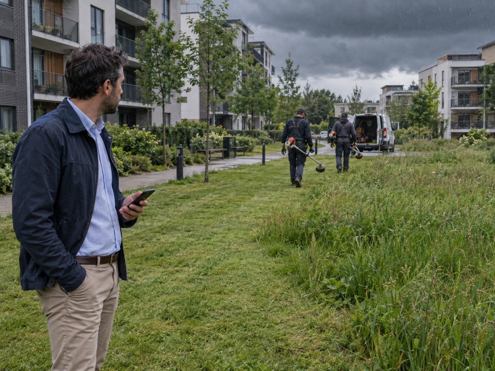
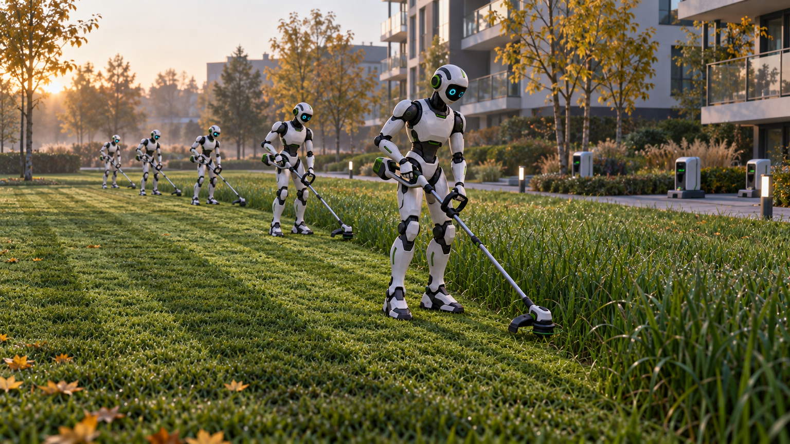
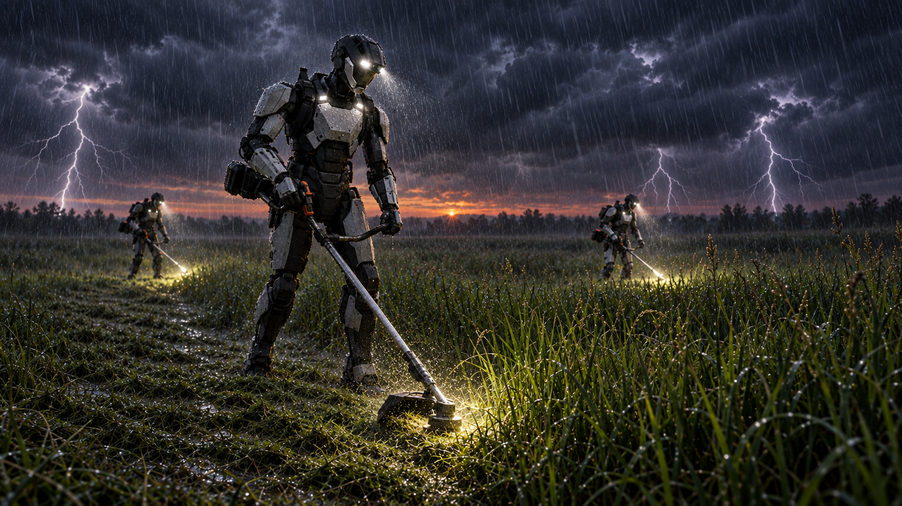
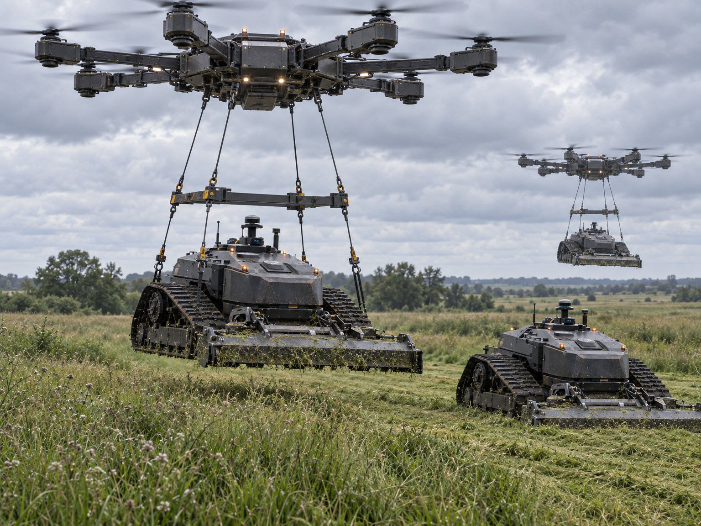
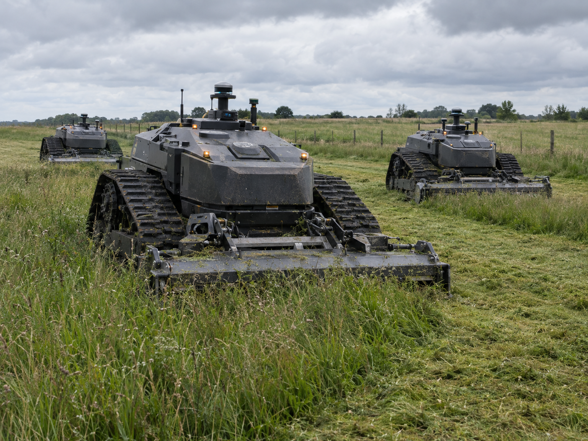

Регулярный покос под контролем искусственного интеллекта — автономными роботами для управляющих компаний, ТСЖ и частных домовладельцев, без сезонного найма бригад косарей.
Рабочих рук не хватает — города зарастают бурьяном. Мы знаем, что с этим делать.
Оставить заявку
Бригады косарей меняются в середине сезона, погода срывает график покоса, а качество работы зависит от того, какая бригада в этот раз вышла на объект.

Роботам не нужен отпуск, больничный и ежегодное переобучение — они работают автономно по расписанию, сезон за сезоном.

Роботы работают в любое время суток и в любую погоду — без перерывов на смену бригады.

Если один робот выходит из строя, на объект автоматически направляется другой — покос не останавливается.

Помимо компактных роботов-газонокосилок — тяжёлая техника для работы любой сложности: большие площади, сложный рельеф, густая растительность.
Оценка площади газона и особенностей участка.
Установка и запуск работы по расписанию.
Без постоянного присутствия персонала.
Регулярный счёт вместо разового договора на сезон.
Регулярный уход за газонами на нескольких объектах.
Покос придомовой территории без сезонного найма бригад.
Представительский вид территории круглый сезон.
Уход за газоном на собственном участке — без найма сезонной бригады.
Не совсем понятно, как проходит работа с РобоКос? Пройдите короткий интерактивный сценарий — от заявки до расчёта плана покоса.
Пройти интерактивный сценарийФорма — ранний прототип и пока не подключена к реальному каналу: данные никуда не отправляются. Ниже пример того, как будет выглядеть отклик.
Форма пока не подключена к реальному каналу связи — это ранний прототип, введённые данные никуда не отправляются и не сохраняются.
Здесь будет прямой контакт — телефон или Telegram (пока не указан).